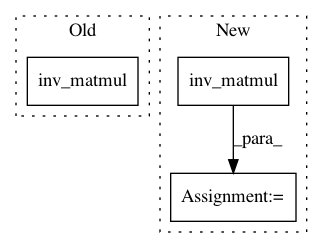

30ca6105f64f1cbbdb7f012bc848ed840e6f3682,gpytorch/models/exact_prediction_strategies.py,InterpolatedPredictionStrategy,mean_cache,#InterpolatedPredictionStrategy#,374
Before Change
mvn = self.likelihood(MultivariateNormal(self.train_mean, self.train_train_covar), self.train_inputs)
train_mean, train_train_covar = mvn.mean, mvn.lazy_covariance_matrix
train_train_covar_inv_labels = train_train_covar.inv_matmul((self.train_labels - train_mean).unsqueeze(-1))
// New root factor
base_size = self.train_train_covar.base_lazy_tensor.size(-1)
mean_cache = self.train_train_covar.base_lazy_tensor.matmul(
After Change
train_mean, train_train_covar_with_noise = mvn.mean, mvn.lazy_covariance_matrix
mean_diff = (self.train_labels - train_mean).unsqueeze(-1)
train_train_covar_inv_labels = train_train_covar_with_noise.inv_matmul(mean_diff)
// New root factor
base_size = train_train_covar.base_lazy_tensor.size(-1)
mean_cache = train_train_covar.base_lazy_tensor.matmul(
In pattern: SUPERPATTERN
Frequency: 4
Non-data size: 3
Instances
Project Name: cornellius-gp/gpytorch
Commit Name: 30ca6105f64f1cbbdb7f012bc848ed840e6f3682
Time: 2019-04-12
Author: gpleiss@gmail.com
File Name: gpytorch/models/exact_prediction_strategies.py
Class Name: InterpolatedPredictionStrategy
Method Name: mean_cache
Project Name: cornellius-gp/gpytorch
Commit Name: 76c081b840cd71b20d8ac8692b312ebef95eae75
Time: 2019-04-11
Author: gpleiss@gmail.com
File Name: gpytorch/models/exact_prediction_strategies.py
Class Name: InterpolatedPredictionStrategy
Method Name: mean_cache
Project Name: cornellius-gp/gpytorch
Commit Name: f01591a685be78db2c440e8024895601017a5b72
Time: 2018-01-24
Author: gpleiss@gmail.com
File Name: gpytorch/models/variational_gp.py
Class Name: VariationalGP
Method Name: __call__
Project Name: cornellius-gp/gpytorch
Commit Name: e8a945606e0b3dafe71ce2f1bf1b52ab3b05428c
Time: 2021-02-10
Author: wjm363@nyu.edu
File Name: gpytorch/lazy/kronecker_product_added_diag_lazy_tensor.py
Class Name: KroneckerProductAddedDiagLazyTensor
Method Name: _solve